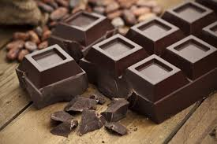

Dark Chocolate
The History of Dark Chocolate
Dark chocolate history goes back at least 3,000 years. Early on, dark chocolate was the only form of chocolate available. It was developed around 1900 B.C. as a beverage in what is now Central and South America. Later the Mayans and the Aztecs made bitter dark chocolate beverages for ceremonial and medicinal purposes. The Spanish brought chocolate back to Europe and added cane sugar or honey to the formula to sweeten it. It wasn't until 1689 that milk was added to traditional dark chocolate drinks by Hans Sloan in Jamaica, making the first milk chocolate. During the 20th century, mass distribution greatly increased the popularity of milk chocolate, and in the late 20th century, dark chocolate regained popularity due to its health benefits.
Worldwide consumption of chocolate is estimated to be at least 7.2 million metric tons annually. The United States accounts for 20% of the world consumption of chocolate with a monetary value of approximately $20 billion. Europe consumes close to 50% of the world's chocolate. The average European consumes 24 pounds of chocolate a year, and the average American consumes half that amount. Dark chocolate represents approximately 20% of overall chocolate consumed in the United States and 30% of all chocolate consumption in Switzerland.
The 2010 Report of the Dietary Guidelines Advisory Committee supports incorporating moderate amounts of dark chocolate as part of a healthy, balanced diet. Nutritionally, dark chocolate and its main ingredient, cocoa, have been shown to reduce risk factors for heart disease. Flavonoids, which are more prevalent in dark chocolate than in milk chocolate, have been shown to help lower blood pressure and improve vascular function. Flavonoids in cocoa beans also have antioxidant effects that reduce cell damage implicated in heart disease. In addition, some research has linked chocolate consumption to reduced risks of diabetes, stroke, and heart attack. Research is ongoing in these and other areas, such as the potential of chocolate to improve cognitive function.
The Processing of Dark Chocolate
Bean Growth and Harvesting. Cocoa beans grow best under the canopy of tropical rain forests typically located within 20 degrees of the equator. There are three main types of cocoa plants, Forastero, Criollo, and Trinitario, which is a hybrid of the first two types. Forastero is now the most common commercial type and produces beans with the strongest flavor. Beans are allowed to ripen on the trees. As they ripen, the pods develop a rich golden-orange or red color depending on the type. The pods are harvested primarily by hand. They are split open, and the beans, which are covered with pulp, are removed from the fruit.
Fermentation and Drying. The fermentation of cocoa beans is the critical step in developing the full flavor potential of the cocoa bean. It is a spontaneous process conducted directly after harvesting the cocoa fruit (pods). Although fermentation is commonly performed using naturally present yeasts, some chocolate manufacturers add yeast-based starter cultures that have been optimally adapted to the cocoa fermentation. The pulp liquefies during fermentation. Fermentation is commonly performed in heaps covered by leaves or in wooden sweating boxes. The process lasts five to seven days, and the temperature and humidity at which it takes place, as well as the frequency with which the beans are turned for aeration, determine the flavor profile a roasted and ground bean will ultimately possess. The goal of fermentation is to develop complex flavors.